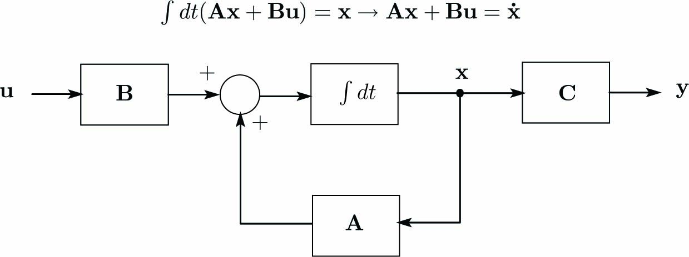

多変数連続時間状態方程式は次式となります。
\begin{align} \left. \begin{array}{@{\,}cl} \dot{\mathbf{x}} ~=& \mathbf{A}\mathbf{x} + \mathbf{B}\mathbf{u}\\ \mathbf{y} ~=& \mathbf{C}\mathbf{x} \end{array} \right\} \label{eq:DiscStateEq} \end{align}ここに、\(\mathbf{x}\)は状態ベクトル(状態空間)、\(\mathbf{y}\)は出力ベクトル、 \(\mathbf{A}\)、\(\mathbf{B}\)、\(\mathbf{C}\)は係数行列です。
式\eqref{eq:DiscStateEq}をブロック線図で表現すると下図になります。 このブロック線図では負帰還(ネガティブフィードバック)を表現するために、 フィードバックブロックを\(-\mathbf{A}\)としています。
ここでは一例として、連立微分方程式を下記のように記述します。
\begin{align} \left. \begin{array}{@{\,}cc} \ddot x_1 + a_{11}x_1 + a_{12}x_2&=~b_1u_1\\ \ddot x_2 + a_{11}x_1 + a_{12}x_2&=~b_2u_2 \end{array} \right\} \label{eq:DffEqn1} \end{align}式\eqref{eq:DffEqn1}を次式のように書き換えます。
\begin{align} \left. \begin{array}{@{\,}cc} \dot x_1 =&~ \dot x_1\\ \dot x_2 =&~ \dot x_2\\ \ddot x_1 =&~ - a_{11}x_1 - a_{12}x_2 + b_1u_1\\ \ddot x_2 =&~ - a_{11}x_1 - a_{12}x_2 + b_2u_2 \end{array} \right\} \label{eq:DffEqn2} \end{align}ここで、行列とベクトルを次式のように定義します。
\begin{align} \mathbf{x}_1=\left[ \begin{array}{@{\,}l} x_{1}\\ x_{2} \end{array} \right],~~ \mathbf{u}=\left[ \begin{array}{@{\,}l} u_{1}\\ u_{2} \end{array} \right],~~ \mathbf{A}_1=\left[ \begin{array}{@{\,}cc} -a_{11}&-a_{12}\\ -a_{21}&-a_{22} \end{array} \right],~~ \mathbf{B}_1=\left[ \begin{array}{@{\,}cc} b_1 & 0\\ 0 & b_2 \end{array} \right]. \label{eq:MatVec} \end{align}式\eqref{eq:MatVec}の行列とベクトルを用いて式\eqref{eq:DffEqn2}を次式のように表現します。
\begin{align} \left[ \begin{array}{@{\,}l} \dot{\mathbf{x}}_{1}\\ \ddot{\mathbf{x}}_{1} \end{array} \right]= \left[ \begin{array}{@{\,}cc} \mathbf{O}&\mathbf{I}\\ \mathbf{A}_1&\mathbf{O} \end{array} \right] \left[ \begin{array}{@{\,}l} \mathbf{x}_{1}\\ \dot{\mathbf{x}}_{1} \end{array} \right]+ \left[ \begin{array}{@{\,}c} \mathbf{O}\\ \mathbf{B}_1 \end{array} \right]\mathbf{u},~~ \mathbf{I}=\left[ \begin{array}{@{\,}cc} 1 & 0\\ 0 & 1 \end{array} \right],~~ \mathbf{O}=\left[ \begin{array}{@{\,}cc} 0 & 0\\ 0 & 0 \end{array} \right]. \end{align}式\eqref{eq:DffEqn1}が\(x_1\)、\(x_2\)として計測される場合、出力\(y_1\)、\(y_2\)は下記となります。
\begin{align} y_1=x_1,~~~y_2=x_2. \end{align}状態ベクトル\(\mathbf{x}\)、出力ベクトル\(\mathbf{y}\)、係数行列\(\mathbf{A}\)、\(\mathbf{B}\)、\(\mathbf{C}\)を次式のように定義します。
\begin{align} \mathbf{x}=\left[ \begin{array}{@{\,}l} \mathbf{x}_{1}\\ \dot{\mathbf{x}}_{1} \end{array} \right],~~ \mathbf{y}=\left[ \begin{array}{@{\,}l} y_{1}\\ y_{2} \end{array} \right],~~ \mathbf{A}=\left[ \begin{array}{@{\,}cc} \mathbf{O}&\mathbf{I}\\ \mathbf{A}_1&\mathbf{O} \end{array} \right],~~ \mathbf{B}=\left[ \begin{array}{@{\,}l} \mathbf{O}\\ \mathbf{B}_1 \end{array} \right],~~ \mathbf{C}= \left[ \begin{array}{@{\,}cc} \mathbf{I} & \mathbf{O} \end{array} \right]. \end{align}こうして次式の多変数連続時間状態方程式が得られます。
\begin{align} \left. \begin{array}{@{\,}cl} \dot{\mathbf{x}} ~=& \mathbf{A}\mathbf{x} + \mathbf{B}\mathbf{u}\\ \mathbf{y} ~=& \mathbf{C}\mathbf{x} \end{array} \right\} \label{eq:StateEq} \end{align}